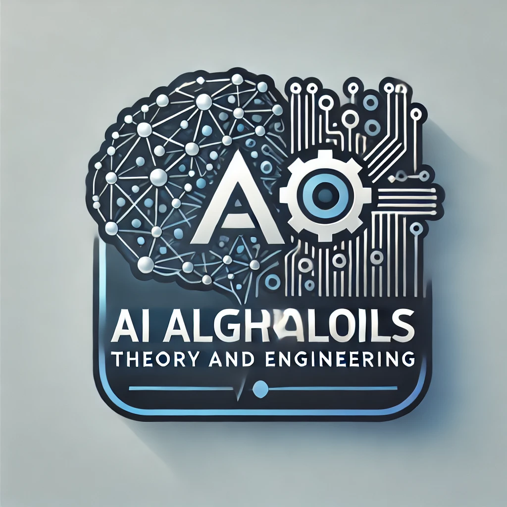
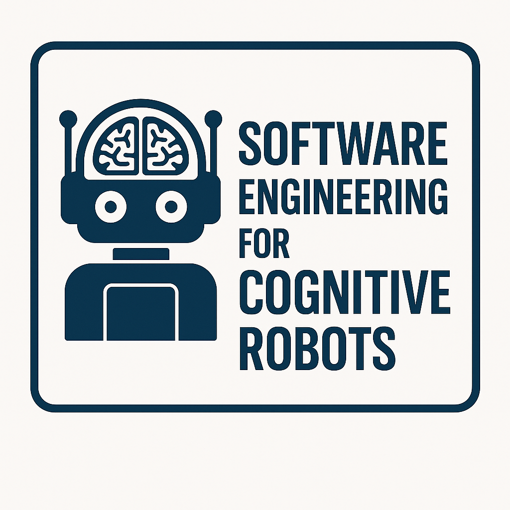
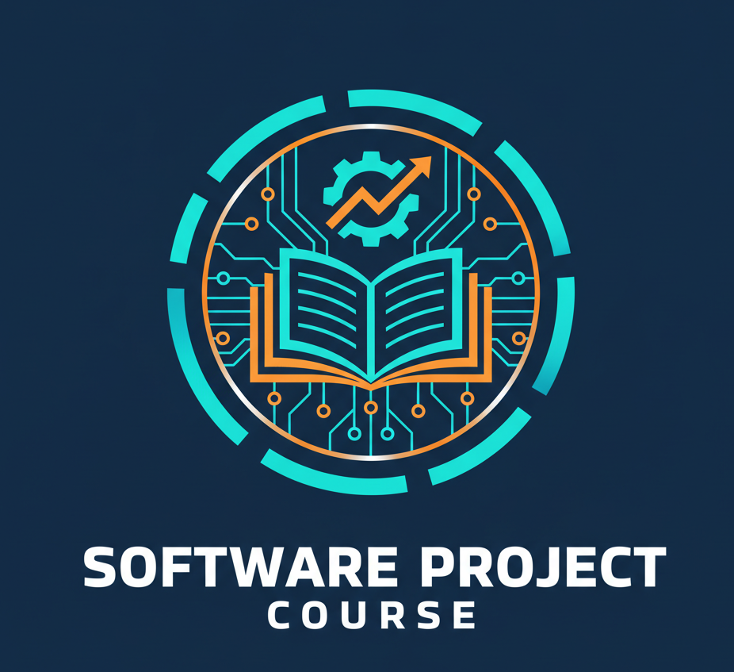

Position: Teaching Assistant

AI Algorithms: Theory and Engineering
- Lecturer: Professor Nico Hochgeschwender
- Course Level: Master's Program
- University: University of Bremen
- Semester: Winter Semester 2024/2025; Winter Semester 2025/2026
- Course Overview: The course focuses on the theoretical foundations and engineering applications of AI algorithms. Topics include machine learning, software engineering, recommendation systems, and AI in real-world applications.
- My Role: I support the course through lab sessions, create and grade assignments, give feedback, and support students with their coursework and projects.

Software Engineering for Cognitive Robots
- Lecturer: Professor Nico Hochgeschwender
- Course Level: Master's Program
- University: University of Bremen
- Semester: Summer Semester 2025
- Course Overview: This course provides an in-depth exploration of software engineering for cognitive robots, focusing on key challenges such as safety, robustness, and adaptability. Students will gain the ability to apply relevant standards, decompose cognitive functions, and develop robust control architectures, while learning to evaluate and test cognitive robots effectively.
- My Role: I support the course through lab sessions, create and grade assignments, give feedback, and support students with their coursework and projects.

Software Project
- Lecturer: Dr. Karsten Hölscher
- Course Level: Bachelor's degree programs
- University: University of Bremen
- Semester: Winter Semester 2025/2026
- Course Overview: The world around us is becoming more "digital" every day. Software and software engineering play a crucial role in this. In this course, we decided to explore the "engineering" process of creating a large software system, from requirements gathering and design to testing and implementation.
- My Role: The students were required to complete a software project. My responsibility was to supervise two teams, each consisting of six members. The teams were expected to deliver the prototype, data model, implementation, and other project components. I held weekly meetings with the teams to monitor their progress and provide guidance.